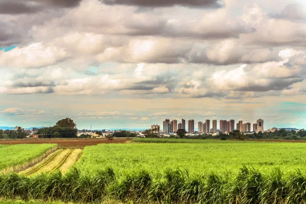
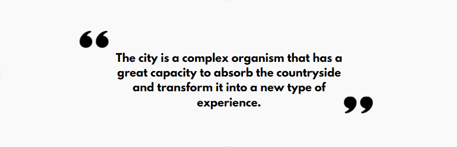

Rural and Urban Relationship
This will reflect the relationship between rural and urban areas, the social function of each space, and the working relationships in rural and urban settings.
Definition of Geographic Spaces
Urban space is characterized by high population density and proximity between dwellings, while rural space is defined by the absence of significant population concentration, serving as a backdrop for primary sector activities such as agriculture, livestock farming, and extraction. Despite their distinct structures and techniques, these spaces are interconnected by economic relationships, where actions in one sphere reciprocally influence the other.
Until the 1940s, the majority of the Brazilian population lived in rural areas, reflecting a predominantly rural demographic distribution. From the governments of Getúlio Vargas and Juscelino Kubitschek onwards, policies of industrialization and openness to foreign capital encouraged rural-urban migration, significantly reducing the proportion of inhabitants in rural areas. This movement was intensified by agricultural mechanization and decreased rural employment opportunities.
Brazilian Urbanization
Brazilian urbanization, considered late and uncontrolled, gained momentum mainly in the Southeast, with the construction of Brasília in the 1960s expanding occupation to the Midwest. This phenomenon resulted in a dramatic increase in the urban population, which grew from approximately 13 million to 138 million over six decades, an increase of over 1000%.
Currently, about 80% of the Brazilian population lives in urban areas, although with regional disparities that contribute to various social problems in cities. The lack of urban planning and inclusive economic policies have exacerbated issues such as violence, slum formation, and unemployment.
The Importance of Rural and Urban Areas
The importance of rural areas lies in the production of essential raw materials for food and industries such as textiles, pharmaceuticals, and construction. Their primary activities ensure fundamental resources for developing economies, particularly reliant on the export of agricultural commodities.
On the other hand, cities act as centers of population convergence, facilitating crucial economic, social, and cultural ties. Besides being hubs for artistic, cultural, religious, business, and sports activities, cities provide essential services such as education, health care, and leisure for a predominantly urban population.
With more than half of the world's population residing in urban centers, ranging from megacities to small towns, cities are also important repositories of history and significant tourist destinations.